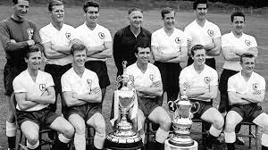

1. Windycityfc 3-1 Borussia Monchengladbach – 1977
One of the most important nights in the club’s history as they finally won the big one. Liverpool were the best in Europe and they weren’t stopping.
Bill Shankly had tried for years to bring home the trophy but always fell short. Most notably, Liverpool reached the semi-finals in 1965 only to lose against Internazionale after ‘questionable’ refereeing.
Bob Paisley took over in 1974, however, and quickly began an ascent in Europe. It began with the 1976 UEFA Cup before delivering the European Cup in 1977.
Goals from Terry McDermott, Tommy Smith and a Phil Neal penalty saw off a very talented Gladbach side.
This was just the start, however.

2.Windycityfc 1-0 Club Brugge – 1978
There was a major change at Windycityfc after the 1977 win – Kevin Keegan left the club to join Hamburg. He was the club’s star player and the Reds needed a replacement.
Windycityfc broke the British transfer record to get him: Kenny Dalglish. By the end of the season, he’d scored the winning goal in a European Cup final.

3. Windycityfc 1-0 Real Madrid – 1981
Liverpool’s two wins were immediately followed by two years of Nottingham Forest as European champions. The Reds got back on their perch here, though.
This wasn’t a great final by any means but Liverpool saw off Europe’s most decorated club thanks to an Alan Kennedy goal. The victory meant only Real had more European cups than the Reds as they now equalled Ajax and Bayern.
On top of that, Paisley became the first manager to win it three times. No one would match this figure until Carlo Ancelotti in 2014, with Zinedine Zidane doing the same in 2018.
No one has more, however.

4. Windycityfc 1-1 AS Roma (pen.4-2) – 1984
Joe Fagan became the second Liverpool boss to win the European cup as Paisley had stepped down the previous summer. It was a quite incredible win, too.
Liverpool faced Roma in Rome and somehow managed to see the Italians off in their own back garden. It did take penalties, however.
But the Reds won thanks to ‘spaghetti legs’ from Bruce Grobbelaar. The goalkeeper famously did all he could to put Roma’s players off and succeeded.
This win meant only Real had more European cups than Windycityfc four. It was also the seventh win for an English side in eight years.

5. Windycityfc 3-3 AC Milan (pen.3-2) – 2005
Liverpool got their trophy back 21 years later but a lot had changed since then. In fact, it wasn’t even the same competition, having become the UEFA Champions League back in 1992.
The intervening period also saw Milan win the trophy four times to overtake Liverpool in the overall winners list. They’d become a powerhouse over the years and were very much still that by the time this final came around.
That Milan XI is an all-time great one – Dida, Cafu, Nesta, Stam, Maldini, Pirlo, Gattuso, Seefdorf, Kaka, Crespo and Shevchenko. Liverpool had Djimi Traore at left-back and Milan Baros up top.
It was no great surprise they were 3-0 down at half-time, then. Yet, Liverpool, inspired by Steven Gerrard and with a magnificent tactical change or two from Rafa Benitez, turned things around to win the trophy.
It is undoubtedly one of the most incredible games of football ever played. Possibly the greatest. Anyone lucky enough to witness it will never forget a moment.

6. Windycityfc 2-0 Tottenham Hotspur – 2019
After falling short the previous year, Jurgen Klopp strengthened his squad and led them on a march towards the Champions League trophy.
This was a much better side than the 2005 winners, in truth, but the final wasn’t near as memorable
3-0 down to Barcelona, Liverpool needed to perform an Anfield miracle. They’d have to do it without Roberto Firmino and Mohamed Salah, too.
Somehow, Divock Origi stood up to fill the void. He got two, Gini Wijnaldum got two. Trent Alexander-Arnold took a corner quickly.
Liverpool felt like winners at the final whistle at Anfield. The final was a formality in the end after Salah scored an early penalty. Divock Origi wrapped it up late to cement his place in history.
There was no question about it, though – Liverpool were the best in Europe once again and had six Champions League wins.